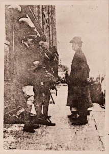
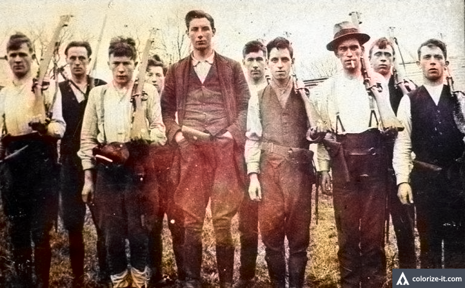

Day 1 - 6/9/20
To many, the island of Ireland is synonymous with storytelling. Tales have mythologized the land, imbuing it and its people with a spirit that is not present in many other places. The burden of carrying on this special legacy falls on the shoulders of storytellers who, for their part, have done wonderfully. One such storyteller was our guest today, named An Tsean Bheairic Ionad Cuartaíochta an Fháil Carraigh.
During the class, we explored the different aspects of the Irish storytelling such as the genre of the hero tale. These tales includes stories like the Tales of Finn and the Fianna. One figure mentioned was Oisin, known as the greatest poet of Ireland and a warrior of the Fianna. He had found the Tir na nog (Land of Youth) but upon returning to Ireland, he was warned to not touch the ground lest his aging catch up to him. Legend has it that he fell off his horse in the process of helping some people he met, fitting with the Irish's welcoming and helpful nature.
Of course, Irish lore is deeper than that. The stories flesh out a number of different inhabitants to the island such as the supernatural warrior pirate Fomorians and the noble Tuatha de Dannan, eventually leading to the Milesians who are most likely the Gaels. However, the most important aspect of Irish storytelling was in preserving the culture of Ireland under British oppression. In 1609, the Gaelic Order was suppressed by British conquest and Gaelic culture went underground to become what is known as a "subaltern" culture.
As a result of the British takeover, much of Gaelic culture turned local and was carried forth by the largely poor Irish. In these towns, storytelling continued to thrive and bring hope to those in the community save for during the times of the Great Famine, where the tradition hit a momentary pause. It was what brought people together in their houses and it would make the fireplace one of the most central places in the Irish home. Parallels to this focus on storytelling can be seen in the Yoruba culture in Africa, where the storytellers are called the Griot. In Ireland, they are called Seanchaí (sean meaning old).
In this modern day, many of the wonders of myth have disappeared with the industrialization of society. However, storytelling continues strong through training programs and the Conradh na gaeilge. Storytelling has accompanied Ireland since the beginning, and it will continue to do so in the future.
“To be human is to be a storyteller” - Tsean Bheairic
Day 2 - 6/10/20
Today, Eamonn came back to help us explore the stormy period of the 1800s as Ireland contended with British rule. One major milestone of the British takeover was the 1801 Act of Union, which the Irish Parliament passed to abolish itself and join Great Britain to form the United Kingdom. However, this was far from a happy union. Resistance groups, such as the United Irishmen, rose up but their uprisings were forcefully quelled. Resistance ended up at two forking paths, peaceful constitutional reform and violent action. These two paths would become intertwined in the Irish resistance movement, one path rising up when the other fails and vice versa.
One such example comes in the form of a man named Daniel O’Connell. O'Connell, known as "The Liberator", was a strong abolitionist who pushed for constitutional reform and the repeal of the Act of Union. While he held much sway in the Irish community, his movement ultimately failed in its efforts. What rose up in its wake in the mid 1800s was the Fenian Movement, a ruthless organization that used physical force to achieve their dreams of an Irish Republic. Meanwhile, in the 1880s, a new constitutional reform movement was born called the Irish Home Rule Movement. Led by Charles Stewart Parnell, the organization pushed for Irish sovereignty as a full franchise within the British Empire.
Besides the history of Irish uprisings, we also got a stark look at the ugly history of racism against the Irish. While it's hard to imagine given the acceptance of Irish into the Euro-White blanket, the Irish were once derided to the same degree as african-americans, sometimes depicted together in the same cartoon. The Irish were drawn as fat, lazy, and violent or given the imagery of simians. What is interesting about the latter was that the Irish ended up embracing that imagery for St. Patrick's Day, retooling the hatred of their enemies into a facet of their culture.
Day 3 - 6/11/20
With the prominence of storytelling in Irish culture, it is of no surprise that written works like poetry have come to dominate the landscape. Two poets of the island, a famous author named Paula Meehan and an up-and-coming author named Matthew McCaughey, joined our class for the day. The stories told, pulled from their lives, serve as a bridge between the history we've been learning about and the reality that Ireland lives with today. This is most poignant in one of Paula Meehan's poems called “Quitting the Bars.” As a result of what scholars describe as postcolonial stress, many of the Irish are plagued by substance abuse and drinking problems.
The rise of poets also represents the major steps that Ireland has taken to advance itself. Paula Meehan describes her generation as "O'Malley's Children", named after politician Donogh O'Malley who introduced the policy of free secondary school education for all children. This helped give opportunities to a huge swath of the population who would otherwise not have access. Meanwhile, the younger Matthew McCaughey described his involvement in community programs taking on the mental health epidemic and a group called "My story, Your Story" which tackles overuse. He is also involved in the Participation and the Practice of Rights Project, an organization dedicated to supporting the marginalized people in making a change in their community.
< p class = "entry">In the end, even as videos and books dominate the landscape and oral tradition becomes less common, poets remain connected to the community. In their words, they tap the rich history of Ireland and its people, giving voice to real-life experience. Poetry is after all, as Paula Meehan put it, the "language of the hearts", and it a voice we must hold dearly as we explore deeper into Ireland.
Day 4 - 6/12/20
In 1916, one event helped shape the future of Ireland in a way few event of its nature had before: the Easter Rising. Surrounding this event, both before and after, are a number of people who helped guide the future of the island and its inhabitants. To help us explore these contentious times, author Lorcan Collins came on as a guest. With his help, we looked at an overview from the times of the Home Rule Movement to the Irish civil war nearly 100 years later.
The Home Rule Party was a moderate party, looking for what Lorcan described as a "wishy-washy" form of independence from Britain. The idea would be that the Irish would receive sovereignty, but still be under the British empire. However, this goal never came to fruition. By 1858, two major Irish organizations came into being: the NYC-based Fenian Brotherhood and the Dublin-based Irish Republican Brotherhood. These two sister organizations would come together to form the Irish Republican Army, more commonly known by its acronym IRA.
In April of 1916, the stage for the Easter Rising was set with the signing of the Proclamation of the Irish Republic by the seven members of the Irish Republican Brotherhood's Military Council. This famous document declared the island independent of Great Britain and established the military council as the ’Provisional Government of the Irish Republic’. The reading of the document outside the General Post Office in Dublin, and the spread of it through distributed copies and radio, marked one of the major events on the first day of the Easter Uprising.
The uprising was ultimately defeated by the British, who executed all of the male leaders left in the wake of the fighting. The female participants, of which there were many, were mostly pushed to the side and forgotten in British history. However, many regard the Easter Uprising as a success in that no similar event has been required since. Additionally, the event of the Easter Rising helped give rise to new political powers in Ireland, namely the Sinn Fein. The party would go on to major success in 1918 under a campaign of Abstentionism. It would in 1921 that Ireland would once again find itself enflamed by conflict during the War for Independence. The story of that war would tear the IRA apart, and bring the island one step closer to the history we know today.
Quotes:
"The Almighty indeed sent the potato blight, but the English created the Famine." - John Mitchell
"It was a good fight anyhow." - Michael Joseph O'Rahilly
“Tír gan teanga, tír gan anam.” ("A country without a language is a country without a soul”) - Pádraig Pearse
Gallery
1 / 4

Proclamation of the Irish Republic
2 / 4

William Paget Depiction of the GPO
3 / 4

Surrender of Patrick Pearse and Elizabeth O'Farrell
4 / 4

IRA Volunteers who fought at Clonmult
Videos
Links
Sinead O'Connor
Daniel O'Connell
Irish Inscription Controversy
Irish Need Not Apply: Denied by a Professor, Proven by a 14-year-old
About Paula Meehan
About The Monto
Quitting the Bars by Paula Meehan
About Terrace Hayes
Favorite Poem Website
About Eavan Boland
About Participation and the Practice of Rights
Music